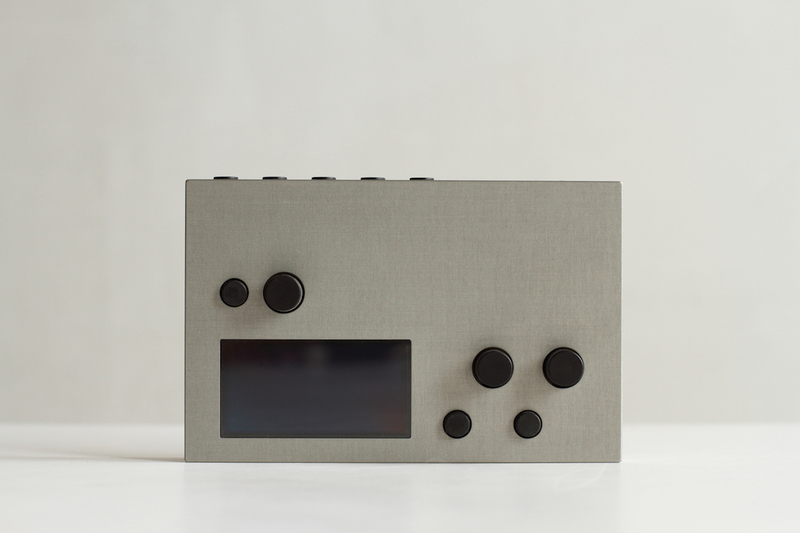

This is a test of this page. It is a small, portable, open-source sound computer that dynamically runs scripts and DSP (Digital Signal Processing), such as:
- sample-cutter
- polysynth
- algorithmic drum machine
- drone box
- granulator
- asynchronous looper
- polyphasic sequencer
Through scripts written in Lua, you can define the behavior of its on-board rotary controls, keys, and screen, as well as any connected devices. Through a large number of pre-written libraries, norns offers a platform for charting new possibilities in music-making. norns connects easily to grids, MIDI devices, USB-CV interfaces, networked OSC, and other objects.
Using engines written with SuperCollider, you can customize and create your own methods of DSP for single performances or longterm exploration. Scripts choose which sound engine to use and then control its parameters using simple programming.
Edit scripts through the maiden web interface over WiFi, or load norns as a network drive and use your preferred development environment. Everything is stored internally on the device. Once editing is done, instruments can be immediately run from the onboard selector.
norns is designed to be changed, encouraging customization and invention. We’ve created studies with lots of code examples to help get started, or you can browse the library of prebuilt instruments made possible with the support of a vibrant international community.
norns is open source and continues to grow with the generous efforts of many contributors.
specifications
audio
- 1/4”, 2 output / 2 input, all line level, unbalanced (use TS cables).
- 1/4” stereo headphone with gain.
interface
- 128 x 64 OLED, 16-level bright white huge pixels.
-
3 endless rotary controls.
- units produced in 2024+ have potentiometers with a slow turn.
- units produced before 2024 have encoders with a fast turn.
- 3 keys.
- rear status LED indicating power and disk access.
interconnect
- 4 x USB ports for devices, can be expanded with a powered USB hub.
- supports up to 16 MIDI devices, 4 grids, 4 arcs, 4 HID.
- serial tty via USB-mini.
- WiFi capable (Ralink RT5370 chipset necessary for hotspot functionality), adapter included.
power
- power/charge via USB-mini.
- high output USB power supply included (5.25V / 2A); US pins, automatically converts 110 - 240 VAC with simple plug format adapter.
- internal lipo battery 2250mAh.
processing
- all units produced before 2021 have a Compute Module 3 (CM3).
- a-stock units produced during and after 2021 have a Compute Module 3+ (CM3+), a few 2021 b-stock units have CM3’s.
- quad-core 1.2GHz, 1GB RAM.
- storage: 4gb (CM3) / 32gb (CM3+).
- CS4270 I2s audio codec (low latency).
os
- Linux with realtime kernel.
physical
- 6.2” x 4.0” x 0.8”
- 1.2 lbs.
- milled aluminum, hard anodized.
- units produced before 2022 are grey.
- units produced during and after 2022 are black.
resources
Semi-linear walkthrough of standard features and usability:
- first: a quick, printable introduction.
- play: a longer introduction and a great starting point.
- wifi / update / files: network connections, norns system updates, and file transfers.
- maiden: manage projects and import scripts.
- community scripts + mods: learn more about the community scripts and mods generously shared for norns.
- control + clock: integrate norns with other tools (eg. MIDI controllers and external synths).
Additional + extended knowledge:
- scripting: scripting studies, tutorials, and reference material.
- help: deeper device and system troubleshooting.
- norns shield: information about norns DIY circuit
Find out more about the current version at lines.
contributing
norns is the result of generous contributions by many people, and the ecosystem continues to evolve. We welcome discussion and code to help further the goal of an open, dynamic instrument creation platform. Check out the GitHub repo. To try out the latest changes to the code, you can read about compiling norns. If you have new functionality you’d like to add, there’s also a guide on extending norns.
If your skills include design, instruction, or proofreading, we’re also always looking for help with documentation. Collective efforts have created numerous exceptional projects over the years, and there’s more to a project than just code!
Found a bug? Let us know. Please email us at help@monome.org or file a GitHub issue.
acknowledgements
This project would not have been possible without Linux or SuperCollider (currently used for DSP extensibility).
matron
(control system) and
crone
(audio system) were created by
@catfact.
maiden
(editor) was created by
@ngwese. Each grew with
contributions from @artfwo,
@jah,
@simon,
@rv,
@pq,
@markwheeler,
@csboling and many others.
norns was initiated by @tehn (monome).